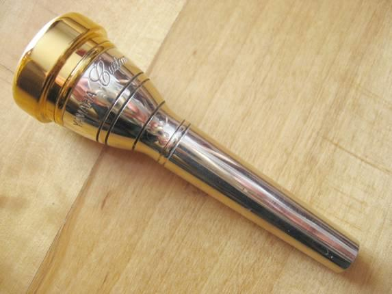

小號
小號是一種銅管樂器，以其明亮且響亮的音色聞名。
它的主要特徵是其圓柱形的金屬管身，並配有三個活塞，通過調整這些活塞，可以改變音高。
小號的音域廣泛，能夠發出高亢而有力的音調，特別適合用於交響樂和軍樂隊中，增添音樂的張力和動感。
此外，小號在爵士樂和流行音樂中也有著重要的地位，常常用來演奏獨奏曲或作為旋律的主要樂器。
其鮮明的音色和表現力使其成為許多音樂作品中不可或缺的一部分。
圖片集


小號是一種銅管樂器，以其明亮且響亮的音色聞名。
它的主要特徵是其圓柱形的金屬管身，並配有三個活塞，通過調整這些活塞，可以改變音高。
小號的音域廣泛，能夠發出高亢而有力的音調，特別適合用於交響樂和軍樂隊中，增添音樂的張力和動感。
此外，小號在爵士樂和流行音樂中也有著重要的地位，常常用來演奏獨奏曲或作為旋律的主要樂器。
其鮮明的音色和表現力使其成為許多音樂作品中不可或缺的一部分。